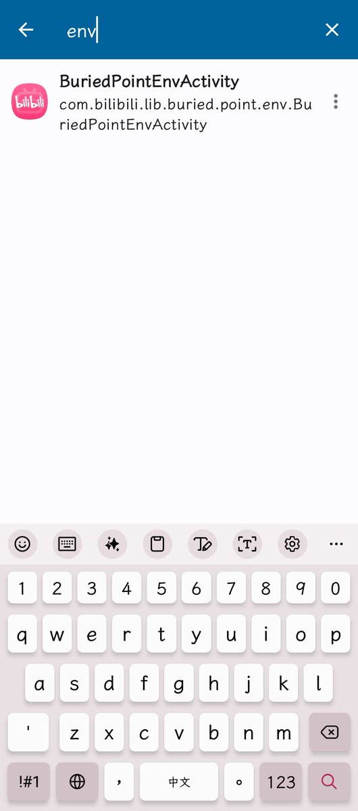
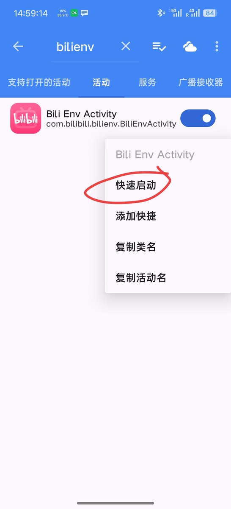
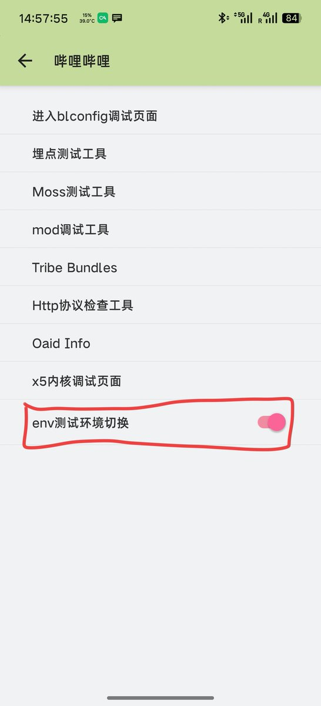

𝖘𝖍𝖎𝖒𝖔𝖐𝖆𝖟𝖊|しもかぜ | ShimoKaze
@wind_dmr
@Timfurry233 8.49.0没搜到



xiaohuangbo🔜绒爪兽聚FURPAW
@Timfurry233
【焚诀】安卓端如何禁止哔哩哔哩云控热补丁？（adb/root）
需要哔哩哔哩版本≤v8.61.1（最新版已被B站官方封堵）
哔哩哔哩历史版本下载：https://t.co/ObSOiPUOT5
手机连接adb输入以下命令
adb shell am start -n tv.danmaku.bili/com.bilibili.bilienv.BiliEnvActivity
如果你有root权限
su -c "am https://t.co/wIv3tkRYHX